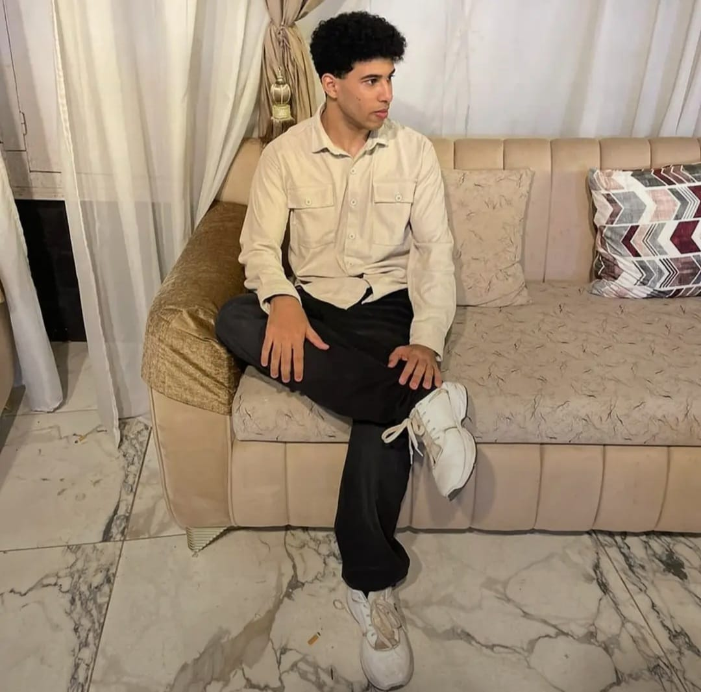

كان قلبه معلقاً بالمساجد، لا يفوت صلاة الفجر حاضراً، وكان دائم الحرص على إدراك صلاة الجمعة في الصفوف الأولى مبكراً. وفي رمضان، كان يُصلي التراويح كل يوم في مسجد مختلف، مصداقاً للحديث الشريف لتشهد له الأرض والمساجد يوم القيامة.
كان ورداً يومياً لأصدقائه؛ يبدأ صباحهم بنشر آية قرآنية أو حديث شريف، وكان دائم النشر للمقاطع الدينية والتذكير بالتوبة.
كان محباً للخير ومساعدة الغير، يوزع التمر على الصائمين في الشوارع وقت الإفطار في رمضان، وإذا رأى والدة أحد أصدقائه تحمل غرضاً في الشارع سارع لحمله عنها.
كان نعم الصديق والسند، لا يرفض طلباً لأحد أبداً، ويأتي على نفسه دائماً حتى لا يغضب أحداً منه. أجمع كل من عرفه ولعب معه أنه لم يفتعل مشكلة قط ولم يرفع صوته على أحد.
كان رفيق الدرب في رحلة التعلم، يشاركني كل معلومة جديدة يكتشفها، ولم يخجل يوماً من سؤالي لأشرح له ما استصعب عليه. كان يحمل حلماً مشتركاً بأن نتكامل معاً؛ هو يبدع في واجهات المواقع (Front-end) وأنا أتقن الـ (Back-end) لنعمل سوياً كفريق واحد.
كانت جلستنا الأسبوعية على المقهى مليئة بالضحكات والنقاشات التي لا تنتهي. كان يأتمني على أسراره ومشاكله وكل تفاصيل حياته، ويحرص دائماً على أخذ رأيي في كل خطوة يخطوها.
كان يشاركنا أدق تفاصيل يومه بحب، يرسل صوره في القطار، في السكن، وفي الكلية، وكان يستشيرنا في أبسط أموره مثل قصة شعره.
فرحته كانت بريئة وصادقة، لن ننسى فرحته الكبيرة عندما تعلم السباحة معي واستطاع الوقوف في الماء لأول مرة لاكن البحر غدار.
اللهم إنّه كان مُحباً لبيوتك وحريصاً على صلاة الفجر، فاجعل ذلك شفيعاً له ونوراً في قبره.
اللهم كما كان يسعى في جبر خواطر عبادك ومساعدتهم، اجبر كسرنا على فراقه، وارحمه برحمتك التي وسعت كل شيء.
اللهم اغفر له وارحمه، وعافه واعف عنه، وأكرم نزله، ووسع مدخله، واغسله بالماء والثلج والبرد، ونقه من الخطايا كما ينقى الثوب الأبيض من الدنس.
اللهم أبدله داراً خيراً من داره، وأهلاً خيراً من أهله، وأدخله الجنة بغير حساب ولا سابقة عذاب.
اللهم اجعل كل حرف قرأه وكل آية نشرها وكل تمرة أطعمها لصائم في ميزان حسناته، وارفع بها درجاته في عليين.